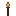

Torch
Generated: 2026-07-15
Blockpage.
| Field | Value |
|---|---|
| ID | torch |
| Page type | Block |
| Display name | Torch |
| Hardness | 0.1 |
| Required tool tier | 0 |
| Preferred tool | none |
| Placeable | True |
| Solid | False |
| Blocks light | False |
| Emits light | True |
| Light radius | 96 |
| Settlement tags | light, safety |
| Image path | art/generated/blocks/torch.png |
| Visual family | 1 canonical image |
| Fallback / placeholder | Generated block texture fallback when authored art is absent. |
Summary
Torch is a current block definition loaded from data/blocks.json.
Visual Family
Block art and variants

| Asset id | Role | File |
|---|---|---|
torch | Canonical image | ../../../art/generated/blocks/torch.png |
Drops
| Drop | Quantity | Notes |
|---|---|---|
| Torch | 1 | Current drop result. |